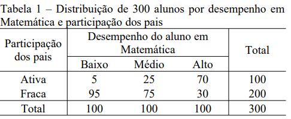

2º Lista de Exercícios
2º Lista de Exercícios¶
Disciplina: Análise de Dados Categóricos
Professora: Nívea da Silva Matuda Machado
Aluno: Guilherme Lisboa de Oliveira (GRR20170414)
Questão 1
A Tabela 1 apresenta um estudo que coletou dados de 300 alunos sobre o desempenho na disciplina de Matemática (baixo, médio e alto) e sobre a participação dos pais (ativa e fraca) nas atividades extra-aulas promovidas pela escola.

a. Usando frequência relativa para estimar probabilidade, estime a probabilidade dos alunos, que possuem pais ativamente participantes, não apresentarem baixo desempenho? Qual é a probabilidade estimada dos alunos apresentarem alto desempenho em matemática sendo que os pais quase não participam das atividades extracurriculares? Comente os resultados.
b. Qual estatística pode ser usada com mais eficácia neste tipo de tabela para testar a inexistência de associação? Porque? Realize o teste e tire uma conclusão;
c. Complete o texto abaixo:
Os valores totais, das colunas e das linhas, são chamados de totais _______________. Quando os ____________________________ e _________________________ variam livremente, o teste de associação é chamado de independência, e quando um dos conjuntos, linha ou coluna é fixado pelo pesquisador então é chamado de teste de _______________. A escolha de qual total fixar vai depender do _________________. Neste exemplo da área de educação, observemos que é muito mais fácil fixar o número de alunos em cada categoria da variável ___________________________________, do que fixar pela variável ________________________, que a princípio, deverá tornar mais complexa a realização do estudo devido à dificuldade de obter este tipo de informação.
a.
import pandas as pd
import statsmodels.api as sm
tabela_1 = pd.DataFrame({
'Participação dos Pais': ['Ativa', 'Fraca'],
'Desempenho Baixo': [5, 95],
'Desempenho Médio': [25, 75],
'Desempenho Alto': [70, 30]
})
tabela_1
| Participação dos Pais | Desempenho Baixo | Desempenho Médio | Desempenho Alto | |
|---|---|---|---|---|
| 0 | Ativa | 5 | 25 | 70 |
| 1 | Fraca | 95 | 75 | 30 |
Probabilidade de alunos não apresentarem desempenho baixo com pais ativamente participantes:
linha_pais_participativos = tabela_1.iloc[0, 1:4]
prob_relativa = linha_pais_participativos[1:3].sum() / linha_pais_participativos.sum()
prob_relativa
0.95
Probabilidade de alunos apresentarem alto desempenho sendo que os pais não participam das atividades:
linha_pais_nao_participativos = tabela_1.iloc[1, 1:4]
prob_relativa = linha_pais_nao_participativos[2].sum() / linha_pais_nao_participativos.sum()
prob_relativa
0.15
Os resultados indicam que a participação dos pais é um fator que aumenta o desempenho dos alunos de matemática
c. Os valores totais, das colunas e das linhas, são chamados de totais marginais. Quando os totais marginais-linha e totais marginais-coluna variam livremente, o teste de associação é chamado de independência, e quando um dos conjuntos, linha ou coluna é fixado pelo pesquisador então é chamado de teste de homogeneidade. A escolha de qual total fixar vai depender do delineamento. Neste exemplo da área de educação, observemos que é muito mais fácil fixar o número de alunos em cada categoria da variável resposta, do que fixar pela variável explicativa, que a princípio, deverá tornar mais complexa a realização do estudo devido à dificuldade de obter este tipo de informação.
Questão 2
A regressão logística tem como objetivo descrever a relação entre uma variável resposta (dicotômica ou politômica) e um conjunto de variáveis explicativas, mediante um modelo que tenha bom ajuste, seja plausível e obedeça ao princípio da parcimônia. Na análise estratificada tem-se também o propósito de descrever a relação entre as variáveis, mas as relações não são efetuadas simultaneamente, pois somente é possível obter a estimativa do OR para um único fator de cada vez, mantendo fixo o conjunto das demais variáveis explicativas. Abaixo segue um quadro comparando as duas estratégias de análise.
Regressão Logística |
Análise Estratificada |
|---|---|
Controla grande número de variáveis simultaneamente |
Simplicidade de execução, com facilidade de entendimento da análise pelo pesquisador |
É a técnica estatística apropriada quando a variável resposta é dicotômica ou politômica |
Dificuldade aumenta quando cresce o número de variáveis |
Barreira entre o pesquisador e a análise |
Menor poder para exploração das variáveis |
As Tabelas 2 e 3 refere-se a um estudo caso-controle sobre câncer de esôfago. Foram comparados 85 casos de câncer de esôfago com 292 controles hospitalares, classificados segundo sexo biológico, idade e os hábitos de beber e fumar, entre outros.
a. Em cada tabela apresentada, identifique a variável explicativa, a variável resposta e a variável usada para dividir os dados em estratos;
b. Calcule, com base nas Tabelas 2 e 3, os valores estimados da OR ponderada de Mante-Haenszel (ORMH). Estes são significativos? Há confundimento ou efeito modificador?
c. Descreva como seria o formato da planilha de dados para que o pacote estatístico utilizado possa lê-lo corretamente e ajustar um modelo de regressão logística adequado para estes dados.
d. Apresente uma lista dos possíveis modelos de regressão logística com e sem interação.
a.
Tabela 2:
Variável resposta: incidência de câncer de esôfago
Variável explicativa: hábito de beber
Variável estratificadora: hábito de fumar
Tabela 3:
Variável resposta: incidência de câncer de esôfago
Variável explicativa: hábito de beber
Variável estratificadora: sexo biológico
b. Valores \(OR\) ponderado dados por Pooled Odds e \(OR_{MH}\) dados por Test of OR=1.
import pandas as pd
import statsmodels.api as sm
tabela_2 = pd.DataFrame({
'Estratos': ['Não Fumante', 'Não Fumante', 'Fumante', 'Fumante'],
'Fatores': ['Bebe', 'Não Bebe', 'Bebe', 'Não Bebe'],
'Casos': [1, 5, 74, 5],
'Controles': [32, 86, 120, 54]
})
tabela_2
| Estratos | Fatores | Casos | Controles | |
|---|---|---|---|---|
| 0 | Não Fumante | Bebe | 1 | 32 |
| 1 | Não Fumante | Não Bebe | 5 | 86 |
| 2 | Fumante | Bebe | 74 | 120 |
| 3 | Fumante | Não Bebe | 5 | 54 |
nao_fumantes = tabela_2.loc[tabela_2.Estratos == 'Não Fumante'].iloc[:, 2:4].to_numpy()
fumantes = tabela_2.loc[tabela_2.Estratos == 'Fumante'].iloc[:, 2:4].to_numpy()
tabela_2_estratificada = sm.stats.StratifiedTable([nao_fumantes, fumantes])
tabela_2_estratificada.summary()
| Estimate | LCB | UCB | |
|---|---|---|---|
| Pooled odds | 4.503 | 2.069 | 9.799 |
| Pooled log odds | 1.505 | 0.727 | 2.282 |
| Pooled risk ratio | 3.483 | ||
| Statistic | P-value | ||
| Test of OR=1 | 15.123 | 0.000 | |
| Test constant OR | 5.621 | 0.018 | |
| Number of tables | 2 | ||
| Min n | 124 | ||
| Max n | 253 | ||
| Avg n | 188 | ||
| Total n | 377 |
tabela_3 = pd.DataFrame({
'Estratos': ['Feminino', 'Feminino', 'Masculino', 'Masculino'],
'Fatores': ['Bebe', 'Não Bebe', 'Bebe', 'Não Bebe'],
'Casos': [8, 8, 67, 2],
'Controles': [35, 94, 117, 46]
})
tabela_3
| Estratos | Fatores | Casos | Controles | |
|---|---|---|---|---|
| 0 | Feminino | Bebe | 8 | 35 |
| 1 | Feminino | Não Bebe | 8 | 94 |
| 2 | Masculino | Bebe | 67 | 117 |
| 3 | Masculino | Não Bebe | 2 | 46 |
femininos = tabela_3.loc[tabela_3.Estratos == 'Feminino'].iloc[:, 2:4].to_numpy()
masculinos = tabela_3.loc[tabela_3.Estratos == 'Masculino'].iloc[:, 2:4].to_numpy()
tabela_3_estratificada = sm.stats.StratifiedTable([femininos, masculinos])
tabela_3_estratificada.summary()
| Estimate | LCB | UCB | |
|---|---|---|---|
| Pooled odds | 6.283 | 2.788 | 14.159 |
| Pooled log odds | 1.838 | 1.025 | 2.650 |
| Pooled risk ratio | 4.923 | ||
| Statistic | P-value | ||
| Test of OR=1 | 21.970 | 0.000 | |
| Test constant OR | 3.647 | 0.056 | |
| Number of tables | 2 | ||
| Min n | 145 | ||
| Max n | 232 | ||
| Avg n | 188 | ||
| Total n | 377 |
c. O formato ideal para ajustar um modelo logístico seriam tabelas com total observado linhas e 3 colunas: uma para definir o estrado da observação, outra para o fator e uma terceira também dicotômica onde 1 significa Caso e 0 Controle.
d.
Sem interação: Caso ~ estrato + fator
Com interação: Caso ~ estrato:fator
Questão 3
O que mede a estatística Kappa? É possível obter valores negativos como resultado para esta estatística? Se sim, quando isso ocorre?
A estatística Kappa é uma medida de concordância proposta por Cohen (1960) e é definida por:
Sendo a probabilidade de concordância dada por \(\Pi_0 = \sum_{i = 1}^{s}p_{ii}\) e a probabilidade de concordância sob \(H_0: p_{ij} = (p_i+)(p_+j)\) (hipótese de independência das duas classificações) dada por \(\Pi_e = \sum_{i = 1}^{s}(p_{i+})(p_{+i})\).
\(\kappa\) assumirá o valor 1 quando exisitr concordância perfeita entre os avaliadores e 0 quando a concordância for a proposta sob \(H_0\). Valores negativos para \(\kappa\) são possíveis quando há discordância acentuada entre os valores. Valores sugeridos por Landis e Koch (1977) tem a seguinte interpetração:
\(\leq\) 0: sem concordância;
0,01 a 0,20: muito fraca;
0,21 a 0,40: fraca;
0,41 a 0,60: moderada;
0,61 a 0,80: substancial;
0,81 a 1: excelente.
Questão 4
O arquivo dados_ex3 contem informações de 100 homens hospitalizados, quanto à idade (0, se \(\leq\) 55 anos; 1, se >55 anos) e quanto à evidência de terem tido sinais de doença coronária, denotada por CHD (sim=1; não=0).
a. Organize os dados em uma tabela de contingência 2 x 2;
b. Parte do output computacional com os resultados da análise por regressão logística destes dados (SE = erro padrão) é apresentada a seguir. Escreva o modelo de regressão logística, considerando CHD como variável resposta e a idade como fator de exposição
b |
SE |
|
|---|---|---|
constante |
-0.841 |
0.255 |
Idade |
2.094 |
0.529 |
a.
import pandas as pd
dados = pd.read_table('./dados/dados_ex3.csv')
tabela_contingencia = pd.crosstab(dados.idade, dados.CHD)
tabela_contingencia
| CHD | 0 | 1 |
|---|---|---|
| idade | ||
| 0 | 51 | 22 |
| 1 | 6 | 21 |
b.
import statsmodels.api as sm
import statsmodels.formula.api as smf
modelo_idade = smf.glm(
"CHD ~ idade",
data=dados,
family=sm.families.Binomial(),
)
fit_modelo_idade = modelo_idade.fit()
fit_modelo_idade.summary()
| Dep. Variable: | CHD | No. Observations: | 100 |
|---|---|---|---|
| Model: | GLM | Df Residuals: | 98 |
| Model Family: | Binomial | Df Model: | 1 |
| Link Function: | Logit | Scale: | 1.0000 |
| Method: | IRLS | Log-Likelihood: | -58.980 |
| Date: | Wed, 21 Dec 2022 | Deviance: | 117.96 |
| Time: | 18:16:18 | Pearson chi2: | 100. |
| No. Iterations: | 4 | Pseudo R-squ. (CS): | 0.1706 |
| Covariance Type: | nonrobust |
| coef | std err | z | P>|z| | [0.025 | 0.975] | |
|---|---|---|---|---|---|---|
| Intercept | -0.8408 | 0.255 | -3.296 | 0.001 | -1.341 | -0.341 |
| idade | 2.0935 | 0.529 | 3.961 | 0.000 | 1.058 | 3.129 |